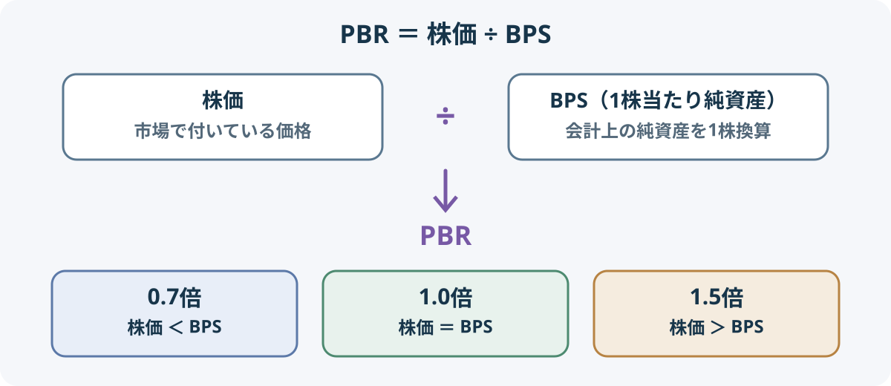

カテゴリツリーを開く
PBRとは？株価純資産倍率の計算方法と見方
PBRの意味から、BPS・PER・ROEとの関係、企業を比較するときの確認ポイントまで解説します。
PBR（株価純資産倍率）は、株価が1株当たり純資産（BPS）の何倍で評価されているかを示す指標です。株価と企業の会計上の純資産を比べることで、市場がその企業をどの程度の価値で評価しているかを確認できます。
ただし、PBRが低ければ割安、高ければ割高と単純には判断できません。純資産の中身や利益を生み出す力、将来の成長性などを合わせて見る必要があります。
1. PBRとは？株価と純資産の関係を見る指標
PBRは「Price Book-value Ratio」の略で、日本語では株価純資産倍率といいます。株価を1株当たり純資産で割って計算し、株価が会計上の純資産に対して何倍の水準にあるかを表します。
企業の価値を考えるとき、利益に注目する指標がPER、純資産に注目する指標がPBRです。
| 指標 | 比べるもの | 主な見方 |
|---|---|---|
| PER | 株価と1株当たり利益（EPS） | 利益に対して株価が何倍か |
| PBR | 株価と1株当たり純資産（BPS） | 純資産に対して株価が何倍か |
| ROE | 利益と自己資本 | 自己資本を使ってどれだけ利益を上げたか |
PERが「一定期間に生み出した利益」というフローに着目するのに対し、PBRは「ある時点で保有する純資産」というストックに着目します。どちらか一方で企業価値を判断するのではなく、異なる角度から組み合わせて見ることが大切です。
2. PBRの計算方法
PBRの基本的な計算式は次のとおりです。
PBR（倍）＝株価 ÷ 1株当たり純資産（BPS）

例えば、株価が1,500円、BPSが1,000円の企業なら、PBRは1.5倍です。
| 項目 | 数値 |
|---|---|
| 株価 | 1,500円 |
| BPS | 1,000円 |
| PBR | 1,500円 ÷ 1,000円 ＝ 1.5倍 |
同じBPSなら、株価が上がるほどPBRは高くなり、株価が下がるほどPBRは低くなります。一方、株価が変わらなくても、純資産や株式数の変化によってBPSが変わればPBRも変化します。
3. BPSとは？PBRの計算に使う1株当たり純資産
BPSは「1株当たり純資産」を表す指標です。PBRは株価をBPSで割って計算します。BPSは、決算時点の純資産と自己株式を除いた普通株式数をもとに算定されるため、利益を基準とするEPSとは計算の基準が異なります。
ここでは、株価1,500円・BPS1,000円ならPBRは1.5倍になる、という関係を押さえておきましょう。
4. PBR1倍は何を意味する？
PBRが1倍のとき、株価とBPSが同じ水準です。BPSが1,000円なら、株価1,000円でPBRは1倍になります。
| 株価 | BPS | PBR | 計算上の関係 |
|---|---|---|---|
| 700円 | 1,000円 | 0.7倍 | 株価がBPSを下回る |
| 1,000円 | 1,000円 | 1.0倍 | 株価とBPSが同じ |
| 1,500円 | 1,000円 | 1.5倍 | 株価がBPSを上回る |
PBR1倍は、時価総額と会計上の純資産が同程度であることを示す目安です。ただし、企業を解散すればBPS相当の金額がそのまま株主に配られる、という意味ではありません。
貸借対照表の資産は会計上の基準で計上されています。実際に売却すると帳簿価額どおりの金額にならないことがあり、売却費用や事業の整理費用も発生します。反対に、帳簿に十分反映されていないブランドや技術、人材、顧客基盤などが事業価値を生んでいる場合もあります。PBR1倍を清算価値や解散価値と同一視しないことが重要です。
5. PBR1倍未満なら割安？
PBRが1倍を下回る状態は、株価が会計上のBPSを下回っていることを意味します。しかし、それだけで割安とは判断できません。市場が、保有する純資産を十分な利益につなげられない、将来の収益が縮小する、資産価値が帳簿上の金額を下回る、といった可能性を織り込んでいることもあります。
例えば、同じBPS1,000円でも、株価700円の企業と株価1,500円の企業ではPBRが異なります。前者のPBRが低い理由を調べずに「安い」と決めつけるのは危険です。
- 収益性が低い：保有資産に対して利益が少なく、資本を効率よく使えていない。
- 業績が悪化している：赤字や利益縮小が続き、将来の純資産や利益への懸念がある。
- 成長期待が低い：事業の市場が縮小している、競争力が弱まっているなど、将来の成長が見込みにくい。
- 資産の質に懸念がある：不良債権、回収が難しい売掛金、収益性の低い設備など、帳簿価額どおりの価値がない可能性がある。
一方で、事業の収益力や資産の価値に対して市場評価が過度に低くなっているケースもあり得ます。PBRの数字だけでは、どちらなのかを区別できません。
6. PBR・PER・ROEの関係
PBRはPERとROEを使って分解して考えることもできます。定義と計算期間をそろえた単純化した関係では、次の式が成り立ちます。
PBR ＝ PER × ROE
ROEは％ではなく小数で計算します。PER10倍、ROE8％（0.08）なら、10 × 0.08 ＝ PBR0.8倍です。
| PER | ROE | 計算上のPBR |
|---|---|---|
| 10倍 | 5％ | 0.5倍 |
| 10倍 | 8％ | 0.8倍 |
| 10倍 | 12％ | 1.2倍 |
| 15倍 | 8％ | 1.2倍 |
この関係から、PBRはROE（資本を使って利益を生み出す力）とPER（利益に対する市場評価）の両方に左右されることが分かります。ROEが高くても、成長期待や事業リスクへの評価からPERが低ければ、PBRが高くならない場合があります。
実際に公表される指標同士では、必ずしもこの式どおりに一致しません。例えば、JPXの株価検索ではROEを前期末と当期末の純資産の平均を基に計算する一方、BPSは期末の純資産と株式数を基にしています。また、PERに予想利益を使うか実績利益を使うかでも数値が変わります。式を使って比較するときは、利益・純資産・株価の基準日や連結・単体の範囲をそろえる必要があります。
ROEは自己資本を使ってどれだけ利益を生み出したかを見る指標です。PBRと組み合わせることで、純資産に対する市場評価と資本効率を一緒に確認できます。
7. 企業を比較するときの見方
PBRを企業比較に使うときは、単純に数値の低い順に並べるのではなく、同じ業種・似た事業構造の企業を比べ、低い・高い理由を確認します。
- 同業他社と比べる：業種によって必要な設備、在庫、金融資産、無形資産の比率が違うため、異なる業種のPBRをそのまま比べない。
- ROEを確認する：純資産を使ってどれだけ利益を生み出しているかを確認する。ROEが低い場合は、その理由を利益率や資産効率などに分けて調べる。
- PERと利益の見通しを見る：利益が一時的に増減していないか、今後の利益成長が見込めるかを確認する。
- 貸借対照表を確認する：現預金、有利子負債、運転資本、固定資産、減損リスクなど、純資産の中身を確認する。
- 資本政策と成長投資を見る：配当や自己株式取得だけでなく、将来の収益力につながる投資や資本配分の方針も確認する。
例えば、A社のPBRが0.7倍、PERが10倍、ROEが7％で、B社のPBRが1.5倍、PERが15倍、ROEが10％だったとします。A社の方がPBRは低いものの、B社の方が高い収益性や成長期待を評価されている可能性があります。この3つの数値だけで優劣は決められず、利益の持続性や財務内容まで確認する必要があります。
東京証券取引所は、上場企業に対して資本コストや株価を意識した経営に向けた対応を要請しています。PBR1倍割れは確認のきっかけの一つですが、企業を見る際は、ROEが資本コストを上回るか、事業の収益性や資本配分を改善できるかといった中身も重要です。株主還元の方法や配当利回り、権利確定日などを確認するときは、株式の配当金の仕組みも参考になります。
8. PBRを見るときの注意点
- 赤字企業ではPERとの組み合わせに注意：利益がマイナスの場合、PERが算出できない、または比較に適さないことがあります。
- 純資産がマイナスの場合：BPSがマイナスになるとPBRも通常の意味で解釈できず、一般的な企業比較には使いにくくなります。
- 業種によって適性が異なる：金融業、製造業、IT企業などでは資産構成やビジネスモデルが違うため、単純比較には限界があります。
- 帳簿に表れない価値がある：ブランド、技術、人材、顧客基盤などは、貸借対照表の純資産に十分反映されない場合があります。
- 株価と会計数値の基準日が違う：株価は日々変動しますが、BPSは決算時点の数値です。決算発表後の変化や株式数の変更も確認しましょう。
PBRは企業を比較するための一つの材料です。PBRだけを投資判断の根拠にせず、利益、成長性、財務健全性、資本効率、事業の競争力などを合わせて評価しましょう。
まとめ
- PBRは株価をBPSで割った指標で、株価が1株当たり純資産の何倍かを示す。
- PBR1倍は株価と会計上のBPSが同じ水準という意味で、解散価値を示すものではない。
- PBR1倍未満でも割安とは限らず、収益性や資産の質、成長性を確認する必要がある。
- PBRはPERやROEと組み合わせ、同業他社との比較や財務内容の確認に使う。
PBRの数字だけで結論を出さず、「なぜその水準で評価されているのか」を調べることが、企業分析では重要です。